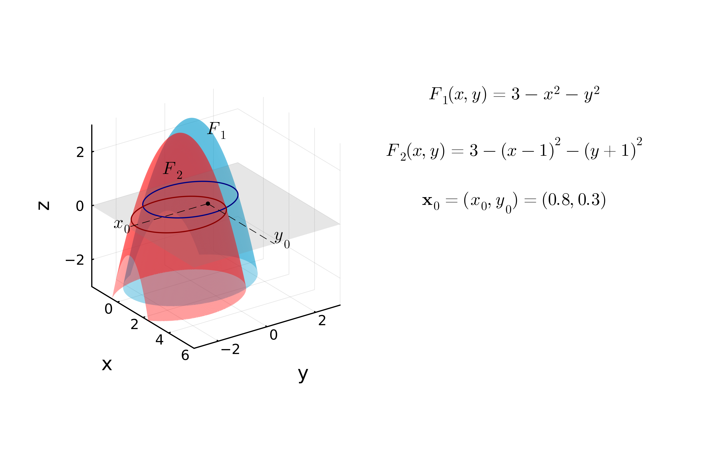
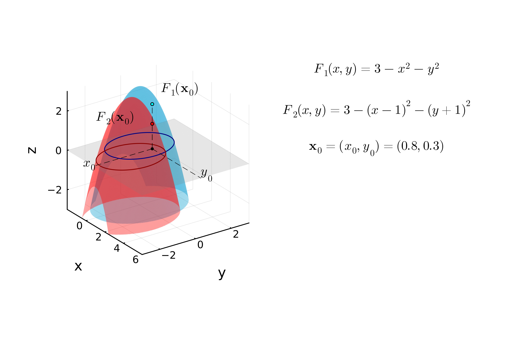

Iterative Progress of Newton's Method
Visual representation of the 2D Newton-Raphson method across 8 iterations.

Iteration 1

Visual representation of the 2D Newton-Raphson method across 8 iterations.